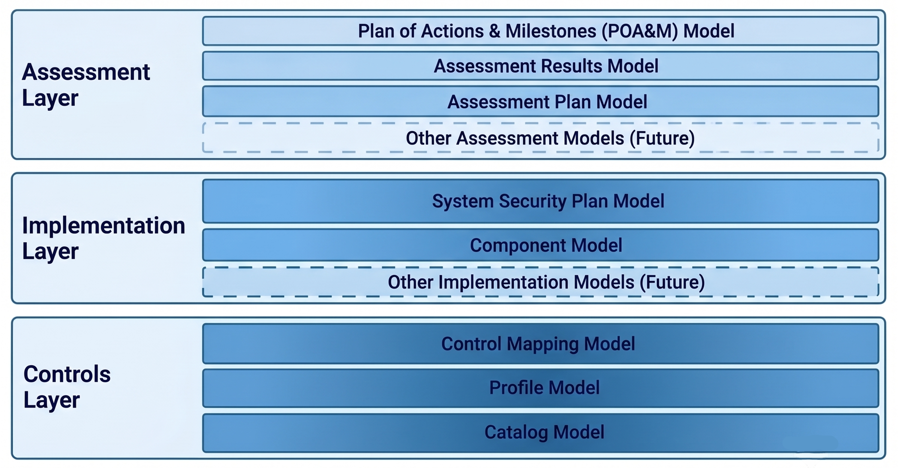

As organizations increasingly operate within highly connected digital environments, traditional cybersecurity compliance approaches are becoming harder to manage.
Manual processes, document-heavy workflows, and proprietary tools often create inefficiencies and make it difficult to share, reuse, and analyze security information.
The growing complexity of system relationships and inherited controls further increases the challenge of understanding security postures and managing risks.
To address these challenges, the National Institute of Standards and Technology (NIST), in collaboration with industry partners developed the
Open Security Controls Assessment Language (OSCAL), which is a collection of standardized, machine-readable models for capturing and
exchanging cybersecurity and privacy information throughout the system lifecycle. It provides a consistent way to represent security
controls, implementations, assessment findings, and authorization documentation using formats such as JSON, XML, and YAML. This standardized
approach enables greater automation, interoperability, faster assessments, continuous monitoring, and reuse of security data across tools, organizations, and compliance workflows.
What is OSCAL?
OSCAL Models
OSCAL defines a suite of eight machine-readable models that collectively support the end-to-end automation of security control selection, implementation, assessment, and authorization. Below lists the current 8 models:
Provides a structured representation of security controls and control enhancements.
Supports the tailoring and composition of control baselines.
Describes reusable system components and the controls they implement.
Documents system-specific control implementations.
Captures the outcomes of security assessments.
Tracks identified risks and remediation activities.
Allows for documenting the alignment between requirements and controls from different regulatory frameworks or versions of the same framework with mathematical precision.

Collectively, these 8 models facilitate consistent information sharing, outgoing security oversight, and automated authorization processes that support implementation of the NIST Risk Management Framework (RMF) and compliance with FISMA requirements.
OSCAL & BloSS@M
In the BloSS@M architecture, OSCAL provides a core framework for encoding, maintaining, and exchanging authoritative cybersecurity information related to software assets and the infrastructure that supports them. Comparable security data can also be produced for
hardware and firmware components managed through centralized asset acquisition and lifecycle management services. In addition, OSCAL enhances visibility into asset-specific security configurations as provided by software vendors, while supporting automated security
assessments and continuous Authorization to Operate (ATO) activities consistent with continuous risk management practices. To satisfy both FISMA obligations and BloSS@M Memorandum of Understanding requirements, the infrastructure operated by each BloSS@M participant
is required to maintain a continuous ATO posture.
The adoption of OSCAL is recommended to enable standardized, interoperable, and automated exchanges of system security plans, control assessments, and authorization data, thereby supporting consistent FISMA compliance while preserving the agility required for a shared, multi-agency blockchain service.
BloSS@M supports the comparative assessment of software assets with similar capabilities across agencies by bringing together cost, licensing, and security-related factors within a single management framework. Its security posture data is sourced from OSCAL's Component Definition
artifacts, which document implemented security controls and configurations.
Standardizing Software Security Information Through OSCAL's Component Definition
BloSS@M leverages OSCAL Component Definition artifacts to consolidate information related to security configurations and implemented security controls. These artifacts provide structured, machine-readable representations of security controls and associated attributes for
software assets, enabling a standardized approach to describing security implementations. As a result, organizations can perform automated and consistent assessments of software security posture across different products, platforms, and vendors.
Through the OSCAL Component Definition framework, vendors can generate artifacts that capture key security-related details, including cryptographic components, provenance information, implemented controls, and known vulnerabilities for software, firmware, and hardware assets.
OSCAL's native extension capabilities also allow these artifacts to be associated with any selected Bill of Materials (BOM). For hardware and firmware acquisition scenarios supported by a BloSS@M styled service, OSCAL Component Definition artifacts can further include references
to application-specific integrated circuit (ASIC) documentation, providing additional context and traceability for acquired assets.
Component Definitions further support the composition of a System Security Plan (SSP) by enabling the reuse of component-level control implementation statements across systems. When developing an OSCAL SSP, organizations can reference and incorporate Component Definition artifacts to describe how system elements—including software assets that are managed through BloSS@M—contribute to the overall system control implementation. This approach reduces duplication, improves consistency, and automatically updates system-level documentation to reflect component security information.
Managing Secure Configuration and Controls Satisfaction with OSCAL
BloSS@M provides a security configuration and controls management capability that allows software vendors and asset providers to publish standardized security information in a machine-readable format. Using OSCAL Component Definition artifacts,
organizations can document the security controls, safeguards, and configuration requirements associated with a software product or service in a consistent and interoperable manner.
By leveraging OSCAL Component Definitions, BloSS@M captures information about how security and privacy controls are implemented, as well as recommended configuration settings that help organizations meet specific security objectives. This approach supports
greater transparency, simplifies the interpretation of vendor-provided security data, and enables integration with automated assessment, compliance, and authorization processes.
OSCAL Component Definition artifacts can include:
- Information about the organization responsible for developing and maintaining the software asset.
- Key product details such as name, version, model, and modification history.
- Security and privacy controls supported or implemented by the asset.
- Configuration guidance and setting required to achieve desired security outcomes.
- Assessment procedures, validation methods, test scripts, or other mechanisms used to verify control implementation.
Within a Component Definition, individual components may be used to document and share:
- Evidence of compliance with specific security requirements for hardware or software, such as the use of FIPS 140-2-validated cryptographic modules
- Information that describes how a hardware, software, or service offering implements or supports specific security or privacy controls
- Descriptions of policies or procedures that contribute to the implementation of security or privacy controls